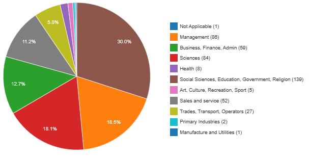
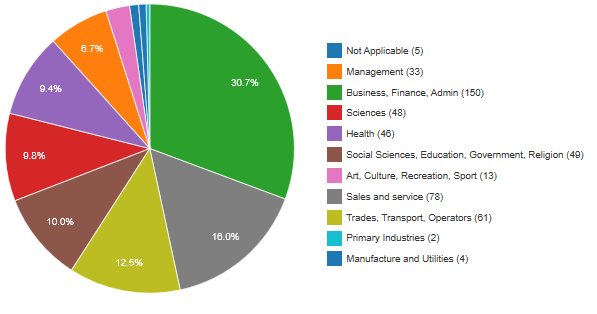

Some issues along my path are the reasonably high crime and addiction rates, semi-low employment rates and a low median income. These problems arise because of the social housing area at the start of my route. In the years 2013-2016 there were a total of 472 calls responded to by the police. While 80 of them were for minor offences such as graffiti, the rest (390) were for more serious crimes such as assault, burglaries and drugs. There was also one shooting in 2016 (one injured, no deaths). These issues are not the worst seen in Ottawa but they are still issues we need to combat. One way to solve some of these issues would be to help people improve their situation so that they can move out of social housing. This would both aid the government by creating new spots within the social housing and aid the residents by helping them become more productive members of society.
On my route I passed two reasonably different demographic areas. The first one I will refer to as Upper-Blackburn and is the area above Innes. The second, Lower-Blackburn is the area below Innes. A few differences between these two areas are the employment rates, average age, household income and education. These statistics, put together, show that the Upper-Blackburn and Lower-Blackburn are two very different areas and this is further supported by the fact that Lower-Blackburn is mostly comprised of social housing.
Statistics wise, Upper-Blackburn has a 60% employment rate, a mean household income of $156, 000 and a average are of 48. In Lower-Blackburn there is a 86% employment rate but a average household income of only $88, 000 and a average age of 36. The fact that there is a higher employment rate in Lower-Blackburn but still a much lower household income helps show that the jobs held by people in Lower-Blackburn are on average worse, lower paying ones. As an example, in Upper-Blackburn 66% of adults have a university degree and only 5.9% have no certification. In Lower-Blackburn however, just 24.6% of adults have a university degree and 9.9% have no certification.

This seems to indicate that these two different areas are comprised of people who hold different jobs. Namely, people in Upper-Blackburn hold jobs mainly in the government (30%), sciences (18%) and management (18%).
In Lower-Blackburn however, most people work in business (30%), sales(10%), trades(10%), government(10%) and sciences(10%).
 